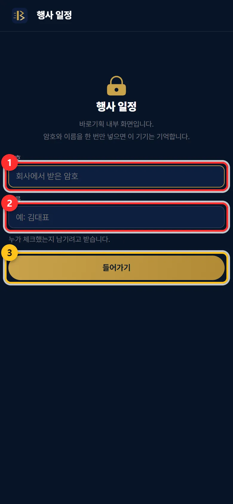
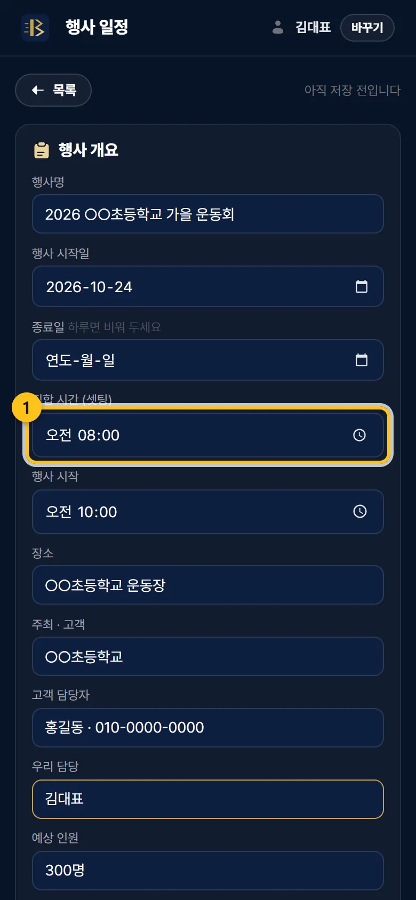
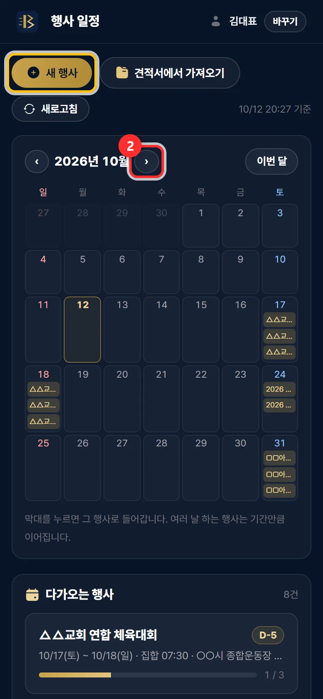
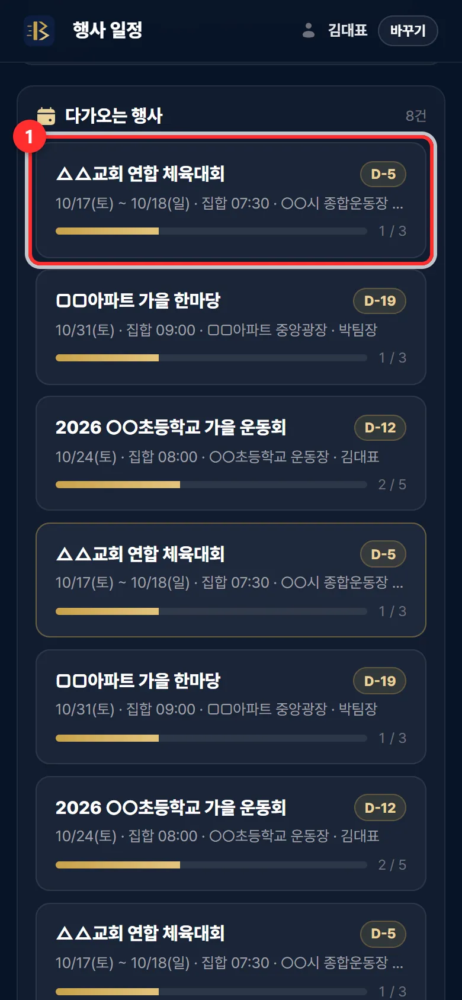
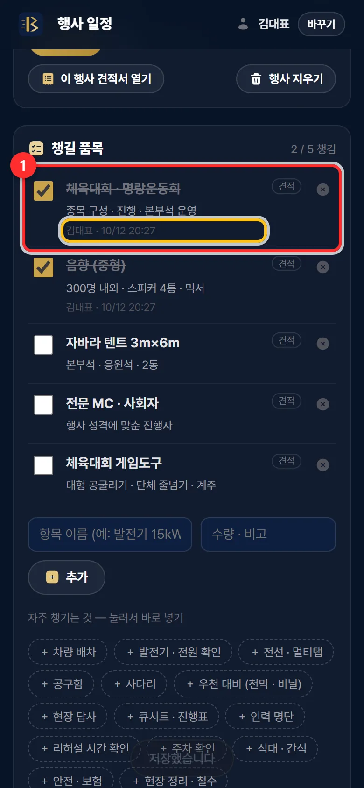
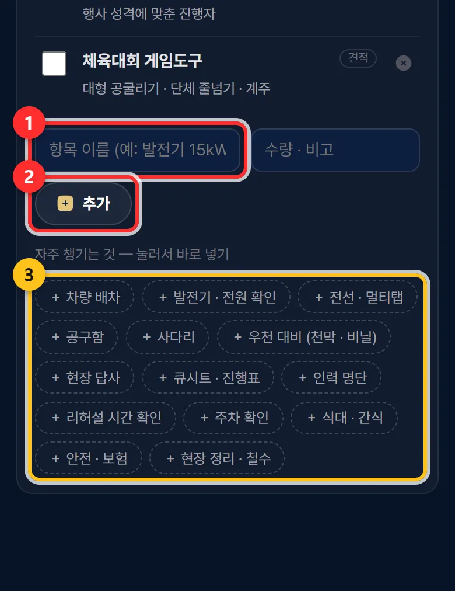
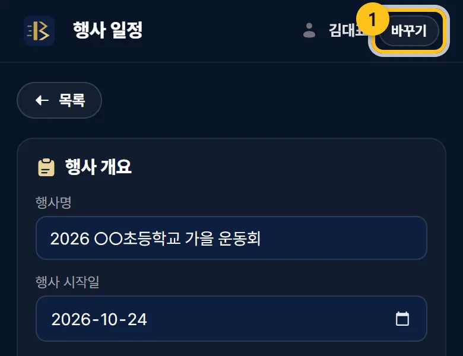

행사 일정 · 체크리스트
월간 일정표와 행사별 「챙길 품목」 목록입니다. 대표님과 직원이 같은 목록을 보고, 누가 무엇을 챙겼는지 남습니다.
우리홈페이지주소/schedule.html언제 쓰나요
- 계약한 행사를 달력에 올릴 때.
- 행사 전날 · 당일 아침, 직원과 짐을 챙길 때 — 체크하면 모두의 화면에 바로 보입니다.
이렇게 하세요
처음 한 번 — 암호와 이름
「암호」와 「이름」을 넣고 들어가기. 그 기기가 기억해서 다음부터는 바로 열립니다. 대표님은 대표 암호, 직원은 직원 암호를 씁니다. 이름은 누가 체크했는지 남기려고 받습니다.

① 암호 ② 이름 ③ 들어가기 견적서에서 「이 견적으로 행사 일정 만들기」
견적서 화면 아래 단추를 누르면 행사명 · 날짜 · 장소 · 손님과 견적 품목이 챙길 품목으로 들어간 새 행사가 열립니다. 「집합 시간 (셋팅)」 · 「행사 시작」 · 「우리 담당」을 채우고 저장을 꼭 누르세요.
일정 화면에서 직접 만들 때는 새 행사, 저장함에 담아 둔 견적서로 만들 때는 견적서에서 가져오기(대표 암호일 때만 열립니다).

① 집합 시간 ② 저장 — 저장해야 직원에게도 보입니다 월간 일정표 · 다가오는 행사
달력의 막대를 누르면 그 행사로 들어갑니다. 여러 날 하는 행사는 기간만큼 이어집니다. ‹ › 로 달을 넘기고 이번 달로 돌아옵니다. 아래 「다가오는 행사」 카드에는 D-day 와 챙긴 개수가 보입니다.

② 다음 달 — 노란 테두리는 「새 행사」 
카드를 누르면 그 행사로 챙길 품목에 체크합니다
챙긴 것은 왼쪽 네모에 체크하세요. 바로 다른 사람 화면에도 반영되고, 아래에 누가 언제 체크했는지 남습니다. 화면을 열어 두면 1분마다, 그리고 다시 볼 때마다 새로 받아 옵니다. 급하면 목록 화면의 새로고침.

① 체크한 품목 — 노란 테두리에 누가 · 언제 품목을 더하고 뺍니다
아래 칸에 항목 이름과 수량 · 비고를 적고 추가. 「자주 챙기는 것」(차량 배차 · 발전기 · 우천 대비 등)은 누르기만 하면 들어갑니다. 줄 오른쪽 × 는 빼기입니다.

① 이름 ② 추가 ③ 자주 챙기는 것 행사가 끝나면
「끝난 행사로 두기」에 체크하고 저장하면 「지난 행사」로 갑니다(날짜가 지나도 저절로 넘어갑니다). 행사 지우기는 직원 화면에서도 같이 사라지니 조심하세요. 견적서에서 만든 행사는 이 행사 견적서 열기로 견적서를 다시 볼 수 있습니다.
자주 하는 실수 · 질문
직원에게 어떻게 알려 주나요?
직원 폰에서 우리홈페이지주소/schedule.html 을 열게 하고 직원 암호와 직원 이름을 넣게 하세요. 직원 암호로는 일정 · 체크리스트만 열리고 견적 · 계약은 안 열립니다.
이름을 잘못 넣었어요
오른쪽 위 이름 옆 바꾸기를 누르세요.

「견적서 보관함은 사장님 암호로만 열립니다」가 나와요
직원 암호로 들어온 기기에서 견적서에서 가져오기를 누른 경우입니다. 견적서는 대표 암호로 들어온 기기에서만 가져올 수 있습니다.
저장했는데 직원 화면에 안 보여요
저장을 눌렀는지 확인하세요. 새 행사는 저장 전까지 그 화면에만 있습니다. 직원 화면에서는 새로고침을 눌러 보세요.